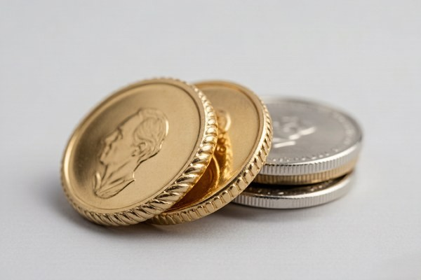
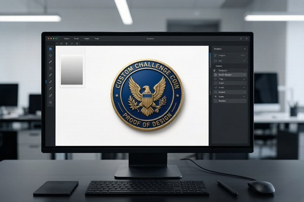

Start With a Clear Purpose
Before you open any design software, decide what the coin needs to do. A coin meant to recognize a military unit has different requirements than a coin meant to promote a brand at a trade show, and both differ from a commemorative piece meant to sit on a shelf. The purpose drives every other decision — size, enamel type, edge, and level of detail.
Write down the single most important thing the coin should communicate. It might be a unit's motto, a company logo, an anniversary date, or a simple symbol of membership. If you cannot state it in one sentence, your design is not focused enough yet, and everything that follows will be harder than it needs to be.
A focused purpose also makes the design review process faster. When every element can be justified against a clear goal, you will find it much easier to cut the parts that do not belong.
Simplify the Artwork
A challenge coin is small — typically one to three inches across — and fine detail that works on a business card or a website will blur or disappear at coin scale. The single most common mistake first-time buyers make is trying to fit too much onto a coin. Thin lines, tiny text, and crowded logos all turn into visual noise once they are reduced to metal.
Strip the design down to its essentials: one strong central emblem, a short phrase or motto, and a clean border. If an element does not earn its place at the final size, remove it. A simple, bold design almost always reads better than a complex, busy one — and it is more memorable, too.
A good test is to print your design at the exact coin size and hold it at arm's length. If you cannot instantly understand it, simplify it. The same test applies to text: if the letters are hard to read on paper, they will be worse once they are stamped and enameled.
Use Contrast, Not Just Color
The most readable coins rely on contrast between metal and enamel, not on a large number of colors. A dark enamel against a polished gold border reads instantly from across a room. Two similar shades of the same color, placed next to each other, blend into mush at arm's length.
Think about value — light versus dark — before you think about hue. A design with strong light-dark contrast will hold up even if the colors are simple. If your design has five similar shades, step back and ask what actually needs to be different. Often, fewer colors with stronger contrast produce a more striking coin.
Remember that the metal itself is a color. Antique gold, bright silver, and black nickel plating all change how the enamel colors read, so consider the plating and the enamel together rather than in isolation.
Choose the Right Size and Shape
Size is a design decision, not an afterthought. It affects legibility, cost, and how the coin feels in the hand. Most standard challenge coins fall between 1.5 and 2 inches, which is large enough for a clear emblem and small enough to carry comfortably. If you are unsure, a 2-inch round coin is the safest all-round choice for most designs.
Shape matters too. Round is the traditional default, but custom die-cut shapes that follow the outline of your logo almost always look more professional than forcing a logo into a circle. A shield-shaped emblem on a shield-shaped coin, for example, reads as intentional and polished. If your logo has an unusual outline, a custom die-cut shape is worth the small extra cost.
Pick Your Enamel Style
The enamel style sets the entire personality of the coin. Soft enamel gives a textured, traditional feel at a lower price, while hard enamel produces a smooth, premium, jewelry-like finish. For bold, sculpted designs, 3D relief adds real depth, and for photographic or gradient-heavy artwork, UV printing is the only option that can reproduce it faithfully.
If you are comparing enamel options in depth, our guide to soft enamel vs hard enamel covers the trade-offs in detail. In short: choose soft enamel for classic, cost-effective full color; choose hard enamel for a premium, display-worthy piece.
Choose an Edge With Intention

The edge is the part of the coin people touch first, yet it is the most overlooked design decision. A rope edge feels classic and traditional, a cross-cut edge feels tactical and machined, and a reeded edge has a minted, coin-like feel. The edge frames the entire design, so it should match the personality of the coin rather than defaulting to a plain standard edge.
There are a dozen common edge styles, from the simple standard edge to decorative options like sunburst, bezel, and leaf edges. If you want to explore all of them, our challenge coin edge types guide walks through each one and how to choose. The key principle: the edge is part of the design, not an afterthought.
Design the Back on Purpose
The reverse side of a coin is free real estate, and too many designs leave it blank by default. A motto, a date, a unit number, a founding year, or a simple texture all add meaning without adding clutter. The back is also a natural place for a secondary message that would not fit on the front.
If your coin is single-sided, the flat back can be engraved with a name or date, fitted with a magnet for fridge or locker use, or given an adhesive backing to turn it into a badge. Even for double-sided coins, the back deserves as much thought as the front.
Select Colors and Prepare Files
When it comes to color, reference the Pantone system rather than naming colors like "dark red." A Pantone code removes all ambiguity and ensures the finished coin matches your brand exactly. Most enamel coins support up to a dozen colors at no extra charge, but for the cleanest result, keep the palette to a focused set of three to seven colors.
For artwork files, vector formats are always best — AI, EPS, SVG, or PDF with text converted to outlines. If you only have raster files, send a PNG or JPG at 300 DPI or higher at the final coin size. And if all you have is a rough sketch or a written description, send that too — a good factory will redraw and digitize it for free and show you a proof before anything is produced.
Designing a Coin That Stands Out From the Crowd
Thousands of challenge coins are made every year, and most of them look roughly the same: a round coin, a central logo, a motto around the rim. A coin that stands out usually does so through one or two deliberate choices rather than through overall complexity. A custom die-cut shape, a distinctive edge, an unusual finish, or a bold 3D element can set your coin apart far more effectively than adding more detail to the face.
Think about what a viewer notices first. The shape is seen before the design, the finish before the text. If your coin has a striking silhouette or a finish that catches the light differently, it will be picked up, examined, and remembered. A generic round coin with a busy design, by contrast, tends to blur into the crowd no matter how much work went into the artwork.
The lesson is to invest your distinctiveness in one signature element — shape, edge, finish, or relief — rather than spreading it thin across a complicated design. A single bold choice makes a coin memorable; a dozen small choices make it forgettable.
Budget Considerations in Coin Design
Design choices and budget are intertwined, and understanding the cost drivers helps you make smart trade-offs. The main factors that affect price are size, enamel style, plating, and whether the coin uses 3D relief — with 3D being the biggest single premium. A standard 2-inch soft enamel coin is the most cost-effective configuration, and it is the baseline most buyers start from.
If you need to trim the budget, the most effective levers are size and enamel style. Moving from hard enamel to soft enamel, or from a 2.5-inch coin to a 2-inch coin, typically saves more than any other change. If you have room in the budget, the highest-impact upgrades are a custom shape, a distinctive edge, or 3D relief on a key element — all of which add perceived value without changing the core design.
A good manufacturer will show you the cost at a couple of different configurations so you can see exactly what each choice costs. That transparency is worth asking for up front — it lets you spend your budget where it makes the most visible difference.
Designing for Specific Audiences
Different audiences expect different things from a challenge coin, and tuning your design to the audience makes the coin feel intentional rather than generic. A military or police unit coin usually emphasizes the unit's emblem, motto, and values, with a bold, traditional look and an edge style like rope or cross-cut that feels durable and earned.
A corporate coin, by contrast, often leads with the logo and brand colors, favoring a cleaner, more polished presentation. Executive gifts lean toward hard enamel and premium plating, while a trade-show giveaway might prioritize a distinctive shape or a functional twist like a bottle opener coin that people will actually use.
Commemorative and anniversary coins tend to favor minted proof finishes and larger sizes, because they are meant to be displayed and kept rather than carried. Matching the design language to the audience is one of the fastest ways to make a coin feel like it belongs to the people receiving it.
Typography and Text on Coins
Text on a challenge coin deserves more care than it usually gets, because lettering that looks fine on screen can become illegible once stamped at a small size. As a rule, keep lettering at least 6 mm (roughly a quarter inch) tall, and prefer bold, simple typefaces over thin or decorative ones. Script fonts, in particular, rarely survive the reduction to coin scale.
Limit the amount of text. A short motto, a date, and a unit number are usually enough — long sentences belong on a plaque, not a coin. Keep spacing generous between letters and between words, and make sure text has strong contrast against its background, such as dark enamel on light metal or light enamel on dark metal.
If a phrase is central to the design, consider placing it on the coin's outer ring or border, where it reads naturally around the edge. And always convert fonts to outlines before sending files, so the text renders the same way on every machine.
Working With the Design Team

You do not have to be a professional designer to get a professional result. A good manufacturer's design team can take a rough sketch, a photo of a logo, or even a written description and turn it into production-ready artwork — often at no extra charge. The key is to communicate the important details clearly: the emblem, the text, the colors, and the overall mood you are going for.
Take full advantage of the proof stage. A free digital proof shows exactly how the coin will look before production, and it is the moment to be picky. Request changes freely — revisions are unlimited until you approve. The more you refine at the proof stage, the more likely the finished coin is exactly what you imagined.
Common Design Mistakes to Avoid
After thousands of custom coin orders, these are the mistakes we see most often:
- Tiny text that becomes unreadable once stamped and enameled.
- Too many colors competing for attention.
- Smooth gradients sent for enamel instead of UV printing.
- Low-resolution screenshots scaled up to coin size.
- Design elements touching the edge, where the border trims them.
- Fonts that break because they were not converted to outlines.
- Crowded layouts with no clear focal point.
Run your design through this checklist before you submit, and your first proof will usually come back nearly perfect.
Designing for Both Sides of the Coin
A challenge coin has two faces, and treating the back as an afterthought wastes half of your canvas. The front usually carries the primary emblem, but the back can hold a motto, a founding date, a unit number, a meaningful symbol, or a texture that ties the design together. The best coins use both sides to tell one complete story.
Think of the front and back as complementary rather than redundant. If the front is a bold emblem, the back might be quieter — a short inscription, a date, or a subtle pattern. If the front is detailed, the back can breathe. The contrast between a busy front and a restrained back often makes a coin feel more thoughtful and complete.
For single-sided coins, the flat back is a functional blank canvas rather than a design surface — it can be engraved with a name or date, fitted with a magnet, or given an adhesive backing. Whichever route you take, the back deserves the same intentional thought as the front.
Using Color Psychology in Coin Design
Color is not just decoration — it carries meaning, and choosing colors with intention makes a coin more effective. Red signals energy, courage, and urgency, which is why it appears on so many fire and emergency services coins. Blue conveys trust, loyalty, and calm, making it a staple for police and corporate designs. Gold and bronze carry a sense of tradition, honor, and prestige.
The metal finish is also a color, and it is easy to overlook. Antique gold feels historical and earned, bright silver feels clean and modern, and black nickel feels bold and tactical. The plating choice shifts the entire mood of the coin, so it should be made with the same care as the enamel palette.
A simple approach is to anchor the design in one or two brand or unit colors, then use the metal finish to set the tone. Too many colors compete for attention and muddy the design; a focused palette with a deliberate metal finish almost always looks more professional.
How to Get Feedback on Your Design
Before you approve a proof, get a second set of eyes on it. Show the design to people who represent your audience — teammates, colleagues, or members of the group the coin is for — and ask a specific question: does the design read clearly at a glance, and does it feel like it represents us? Vague feedback is less useful than targeted questions.
The proof stage is exactly the right time to be picky. A free digital proof costs nothing to revise, but a mistake discovered after production means a whole new run. Gather feedback early, apply it at the proof stage, and only approve once you are confident the design is exactly what you want. A few extra minutes of review here saves days and money later.
From Sketch to Finished Coin: The Complete Journey
It helps to understand the full journey a coin takes from idea to finished piece, because it clarifies what happens at each stage and where your input matters most. The process begins with your artwork or sketch, which the design team turns into a production-ready file. That file is used to cut a die, and the die strikes the metal into the coin's shape. Enamel is then applied and cured, followed by plating and finishing, and finally a quality check before shipping.
Your involvement is concentrated in the early and final stages: providing a clear idea up front, and reviewing the proof carefully at the end. The middle stages — die-cutting, enameling, plating — are handled by the factory, which is exactly what you want. The better your initial input and the more careful your proof review, the smoother the journey from sketch to finished coin.
This is also why it pays to work with a manufacturer that communicates clearly at every step. A good factory keeps you informed from proof to production to shipping, so you always know where your coin is and what comes next. The best coin projects feel less like placing an order and more like a collaboration.
The Proof and Revision Process
Once you submit your design, the process is simple. You receive a free digital proof — usually within 12 hours — showing exactly how the coin will look. This is your chance to catch problems before metal is cut. Request changes freely; revisions are unlimited until you approve. Only after you sign off does production begin, typically running seven to ten business days.
Ready to Design Your Custom Coins?
Get a free quote and digital proof in 12 hours. Our team will help you refine your design for the best possible result.
Get Free QuoteFrequently Asked Questions
What file format should I send for my coin design?
Vector files (AI, EPS, SVG, PDF) are best. If you only have raster files, send a 300 DPI PNG or JPG at the final coin size. A sketch or written description is also fine — we will redraw it for free.
How many colors can a challenge coin have?
Most enamel coins support up to 12 colors at no extra charge, though a focused palette of 3 to 7 colors usually looks best. UV printing allows unlimited full-spectrum color.
Can I use my existing logo?
Yes. Send your logo in vector or high-resolution format. If it is low resolution, we will redraw it for production.
Is the digital proof really free?
Yes. Every order includes a free digital proof with unlimited revisions before production begins.
Conclusion
Designing a challenge coin does not have to be intimidating. Start with a clear purpose, keep the design simple and readable, choose an enamel style and edge that match the personality of the coin, and let the factory guide the technical details. A focused, well-planned design almost always becomes the coin people carry for years.
Ready to turn your idea into a coin? Get a free quote and digital proof — we will help you refine every detail before anything goes into production.